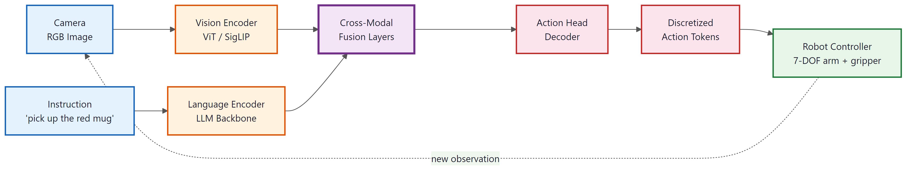

An AI that can only talk about the world is fundamentally different from one that can act in it.
Frontier, Restlessly Embodied AI Agent
Vision-Language-Action (VLA) models represent the convergence of multimodal AI and robotics. While standard LLMs process text and images, VLA models add a third modality: physical actions. These models observe the world through cameras, reason about tasks using language understanding, and produce motor commands that move robotic arms, navigate spaces, or manipulate objects. The key architectural insight is that the same transformer backbone that predicts the next token can also predict the next robot action, when the action space is appropriately tokenized. This section surveys the leading VLA architectures (RT-2, OpenVLA, Octo), the simulation environments used for training and evaluation, and the techniques for transferring learned behaviors from simulation to real robots.
Prerequisites
This section builds on the vision-language models introduced in Section 26.1 and the unified multimodal architectures from Section 26.4. Familiarity with the agentic AI concepts from Part VI, especially tool use and planning, provides useful context for understanding how embodied agents extend LLM capabilities from digital to physical environments.
26.5.1 Vision-Language-Action Models
A Vision-Language-Action (VLA) model takes as input a visual observation (typically an RGB image from a robot's camera) and a natural language instruction ("pick up the red cup and place it on the shelf"), and produces a sequence of motor actions as output. The actions are typically represented as 7-dimensional vectors: 3 values for end-effector position (x, y, z), 3 values for orientation (roll, pitch, yaw), and 1 value for gripper state (open/close).
The VLA paradigm treats action generation as a sequence modeling problem, the same framework that underlies text generation. Just as GPT predicts the next token given previous tokens, a VLA model predicts the next action given previous observations and actions. This framing allows VLA models to leverage the massive pretraining investment of foundation models: a 7B-parameter vision-language model already understands objects, spatial relationships, and task semantics from web-scale pretraining. Fine-tuning it to output actions requires only a thin adaptation layer on top of this rich representation.

When Google DeepMind asked RT-2 to "pick up the extinct animal," the robot successfully identified and grasped a plastic dinosaur from a cluttered table. Nobody had ever shown the robot a dinosaur during training. It transferred the concept entirely from web knowledge, proving that billions of internet images can teach a robot arm things no roboticist ever programmed.
The action space can be represented in two ways. Continuous actions predict floating-point values for each dimension, typically using a regression head. Tokenized actions discretize each dimension into bins (e.g., 256 bins per dimension) and predict action tokens using the same vocabulary machinery as text tokens. The tokenized approach has proven more effective because it allows the model to express uncertainty through the probability distribution over bins, and it avoids the mode-averaging problem that plagues regression on multimodal action distributions.
The most important conceptual breakthrough in VLA models is treating actions as tokens in the same vocabulary as text. When RT-2 discretizes a 7-DOF robot action into 256 bins per dimension, it can represent any action as a sequence of 7 tokens from a vocabulary of 256. These action tokens are appended to the language model's existing vocabulary and trained with the standard next-token prediction objective. This means the model can interleave reasoning ("I need to move left to avoid the obstacle") with action prediction (action tokens for leftward motion) in a single autoregressive sequence, unifying perception, reasoning, and control in one architecture.
26.5.2 RT-2: Web-Scale VLMs for Robot Control
RT-2 (Robotic Transformer 2), developed by Google DeepMind, demonstrated that large vision-language models pretrained on web data can be directly fine-tuned for robot control. The architecture starts with PaLI-X (a 55B-parameter VLM) or PaLM-E (the 12B variant of PaLM-E; the family also includes a flagship 562B model built on PaLM-540B + ViT-22B, see Driess et al., 2023, arXiv:2303.03378), both trained on billions of image-text pairs from the internet. RT-2 fine-tunes these models on robot demonstration data, teaching them to output tokenized actions alongside natural language.
The key finding is that web-scale pretraining transfers remarkably well to robotics. RT-2 can generalize to objects, backgrounds, and environments never seen in the robot training data because the underlying VLM already has rich visual and semantic knowledge. When asked to "pick up the Taylor Swift album," RT-2 can identify the correct object even though no robot demonstration ever included a Taylor Swift album, because the VLM learned about Taylor Swift album covers from web data.
RT-2 represents actions by mapping each dimension of the 7-DOF action space to an integer between 0 and 255, then converting these integers to string tokens. The action "move right 3cm, up 1cm, close gripper" becomes a string like "128 140 130 128 128 128 255" which the model generates token-by-token using its standard language modeling head. This representation is simple but effective: it requires no architectural changes to the base VLM.
# RT-2 style action tokenization
# Converting continuous robot actions to language model tokens
import numpy as np
from typing import List, Tuple
class ActionTokenizer:
"""
Discretize continuous robot actions into tokens.
Each dimension is mapped to one of num_bins integer tokens.
"""
def __init__(
self,
num_bins: int = 256,
action_ranges: List[Tuple[float, float]] = None,
):
self.num_bins = num_bins
# Default ranges for a 7-DOF robot arm (meters, radians, binary)
self.action_ranges = action_ranges or [
(-0.5, 0.5), # x position delta
(-0.5, 0.5), # y position delta
(-0.5, 0.5), # z position delta
(-np.pi, np.pi), # roll
(-np.pi, np.pi), # pitch
(-np.pi, np.pi), # yaw
(0.0, 1.0), # gripper (0=open, 1=closed)
]
def encode(self, continuous_action: np.ndarray) -> List[int]:
"""Convert a continuous 7-DOF action to 7 discrete tokens."""
tokens = []
for i, (low, high) in enumerate(self.action_ranges):
# Clip to valid range
val = np.clip(continuous_action[i], low, high)
# Normalize to [0, 1] then scale to [0, num_bins-1]
normalized = (val - low) / (high - low)
token = int(normalized * (self.num_bins - 1))
tokens.append(token)
return tokens
def decode(self, tokens: List[int]) -> np.ndarray:
"""Convert 7 discrete tokens back to continuous action."""
action = np.zeros(len(self.action_ranges))
for i, (low, high) in enumerate(self.action_ranges):
normalized = tokens[i] / (self.num_bins - 1)
action[i] = low + normalized * (high - low)
return action
# Example: tokenize a robot action
tokenizer = ActionTokenizer(num_bins=256)
action = np.array([0.1, -0.05, 0.02, 0.0, 0.0, 0.3, 1.0])
tokens = tokenizer.encode(action)
reconstructed = tokenizer.decode(tokens)
print(f"Original action: {action}")
print(f"Tokenized (7 ints): {tokens}")
print(f"Reconstructed action: {reconstructed}")
print(f"Max reconstruction error: {np.max(np.abs(action - reconstructed)):.4f}")
26.5.3 OpenVLA: Open-Source Vision-Language-Action
OpenVLA (Kim et al., 2024) is a 7B-parameter open-source VLA model built on the Prismatic VLM backbone. While RT-2 requires 55B parameters and proprietary infrastructure, OpenVLA demonstrates that a 7B model trained on the Open X-Embodiment dataset can achieve competitive performance on a variety of manipulation tasks. The model architecture combines a SigLIP vision encoder with a Llama 2 language model backbone, using a two-layer MLP projector to align visual features with the language model's embedding space.
OpenVLA's key contribution is demonstrating practical fine-tuning for new robot platforms. Using LoRA (Section 16.1) with rank 32, a researcher can adapt OpenVLA to a new robot and task in under 4 hours on a single A100 GPU. This dramatically lowers the barrier to entry for applying VLA models to real-world robotics research.
The training pipeline consists of two stages: (1) pretraining on the Open X-Embodiment dataset, a collection of over 1 million robot demonstration episodes from 22 different robot platforms, covering tasks like grasping, placing, pushing, and drawer manipulation; (2) task-specific fine-tuning on demonstrations collected for the target robot and task.
# Using OpenVLA for robot action prediction
# Requires: pip install openvla transformers
from transformers import AutoModelForVision2Seq, AutoProcessor
from PIL import Image
import torch
# Load the pretrained OpenVLA model
model = AutoModelForVision2Seq.from_pretrained(
"openvla/openvla-7b",
torch_dtype=torch.bfloat16,
device_map="auto",
attn_implementation="flash_attention_2",
)
processor = AutoProcessor.from_pretrained(
"openvla/openvla-7b",
trust_remote_code=True,
)
# Simulate robot observation (in practice, this comes from the robot's camera)
image = Image.open("robot_workspace.png")
# Natural language instruction
instruction = "Pick up the red cup and place it on the plate."
# Format input following OpenVLA's prompt template
prompt = f"In: What action should the robot take to {instruction}\nOut:"
inputs = processor(prompt, image).to(model.device, dtype=torch.bfloat16)
# Generate action tokens
action_tokens = model.generate(
**inputs,
do_sample=False,
max_new_tokens=512,
)
# Decode the predicted action
predicted_action = processor.decode(
action_tokens[0], skip_special_tokens=True
)
print(f"Instruction: {instruction}")
print(f"Predicted action tokens: {predicted_action}")# Fine-tuning OpenVLA with LoRA for a new robot platform
# Adapts the pretrained model to a specific robot and task
from transformers import AutoModelForVision2Seq, AutoProcessor
from peft import LoraConfig, get_peft_model
import torch
# Load base model
model = AutoModelForVision2Seq.from_pretrained(
"openvla/openvla-7b",
torch_dtype=torch.bfloat16,
device_map="auto",
)
# Configure LoRA for efficient fine-tuning
lora_config = LoraConfig(
r=32, # rank
lora_alpha=32, # scaling factor
target_modules=[ # apply LoRA to attention layers
"q_proj", "k_proj", "v_proj", "o_proj",
"gate_proj", "up_proj", "down_proj",
],
lora_dropout=0.05,
bias="none",
task_type="CAUSAL_LM",
)
model = get_peft_model(model, lora_config)
trainable = sum(p.numel() for p in model.parameters() if p.requires_grad)
total = sum(p.numel() for p in model.parameters())
print(f"Trainable parameters: {trainable:,} / {total:,} "
f"({100 * trainable / total:.2f}%)")
# Typical output: ~50M trainable out of 7B total (0.7%)
# Training loop uses standard HuggingFace Trainer
# with a dataset of (image, instruction, action) tuples
# collected from robot demonstrations
from transformers import TrainingArguments, Trainer
training_args = TrainingArguments(
output_dir="openvla-myrobot-lora",
per_device_train_batch_size=4,
gradient_accumulation_steps=8,
learning_rate=2e-5,
num_train_epochs=10,
bf16=True,
logging_steps=50,
save_strategy="epoch",
)
# trainer = Trainer(model=model, args=training_args, train_dataset=robot_dataset)
# trainer.train()
print("LoRA fine-tuning configured; provide robot demonstration dataset to train")26.5.4 Octo: Generalist Robot Policy
Octo (Ghosh et al., 2024) takes a different architectural approach from RT-2 and OpenVLA. Rather than adapting a pretrained VLM, Octo is a transformer trained from scratch on the Open X-Embodiment dataset, specifically designed for robotics from the ground up. The architecture uses a "readout" mechanism where task-specific tokens are added to the transformer sequence, and the model learns to produce actions by attending to both visual observations and these task tokens.
Octo's distinguishing feature is its support for multiple action heads. The base model can output actions through either a diffusion head (for complex, multimodal action distributions) or a regression head (for simpler tasks), and new action heads can be added for novel robot morphologies without retraining the backbone. This modular design makes Octo particularly well-suited as a foundation for robotics research, where different labs use different robots with different action spaces.
The model supports both language-conditioned and goal-image-conditioned tasks. In language conditioning, the instruction is encoded by a text encoder and injected into the transformer through cross-attention. In goal conditioning, a target image showing the desired final state is provided alongside the current observation, and the model learns to produce actions that transition from the current state to the goal state.
The Open X-Embodiment dataset, assembled by a consortium of over 20 robotics labs including Google DeepMind, Stanford, and UC Berkeley, contains more than 1 million robot demonstration episodes from 22 robot platforms. It spans tabletop manipulation, mobile manipulation, and navigation tasks. The dataset standardizes the observation format (RGB images) and action representation (7-DOF end-effector control) across heterogeneous robot hardware. This standardization is what makes cross-robot generalization possible: a model trained on demonstrations from a Franka arm can transfer learned grasping strategies to a Kuka arm because the action representation is shared.
Warehouse Picking Robot Learns New Products Overnight
Who: A robotics engineer at a mid-size logistics company operating fulfillment centers.
Situation: The company needed its picking robots to handle 200 new SKUs added to the warehouse each week.
Problem: Retraining the traditional vision pipeline for new objects took 3 days of data collection and 2 days of model training per product category.
Dilemma: They could expand the robotics team to keep up with SKU additions (expensive), freeze the SKU catalog (unacceptable to the business), or try a VLA model that might generalize to unseen objects from language descriptions alone.
Decision: They fine-tuned OpenVLA on their existing robot demonstration data using LoRA, betting that the VLM backbone's web knowledge would handle novel objects.
How: Using LoRA rank-16 adaptation on a single A100, they fine-tuned OpenVLA on 5,000 existing pick-and-place demonstrations in 6 hours. New products required only a text description ("pick up the blue rectangular box labeled Acme Widgets"), with no additional training.
Result: The VLA model successfully picked 87% of new SKUs on the first attempt, compared to 0% for the previous system without retraining. Weekly data collection effort dropped from 15 person-hours to zero for standard product shapes.
Lesson: VLA models turn product onboarding from a data collection problem into a language description problem, collapsing weeks of per-category training into a single prompt.
26.5.5 Simulation Environments
Real-world robot data collection is expensive and slow: a single robot arm can collect perhaps 100 to 200 demonstrations per day under human supervision. Simulation environments enable data collection at 1000x the rate, running hundreds of parallel environments on a single GPU. The tradeoff is the "reality gap," the mismatch between simulated physics and visual appearance and their real-world counterparts.
26.5.5.1 Habitat 3.0
Habitat 3.0 (Meta AI) is a simulation platform for embodied AI research that supports humanoid avatars and robots in photorealistic indoor environments. Unlike earlier simulators focused on navigation, Habitat 3.0 supports complex human-robot collaboration scenarios: a robot and a simulated human work together to tidy a room, with the robot needing to predict the human's intentions and coordinate its actions accordingly. The simulator renders at over 100 FPS on a single GPU, enabling efficient reinforcement learning and behavior cloning at scale.
26.5.5.2 EmbodiedBench
EmbodiedBench (Yang et al., 2025) provides a standardized benchmark for evaluating embodied multimodal agents across multiple simulation environments. It tests four core capabilities: (1) perception, recognizing objects and spatial relationships; (2) planning, decomposing high-level instructions into executable steps; (3) grounding, mapping language references to specific objects in the scene; (4) manipulation, executing physical interactions with objects. The benchmark includes over 1,000 tasks spanning kitchen environments, living rooms, and outdoor scenes.
# Setting up a robot simulation environment with Habitat
# For VLA model evaluation and data collection
import habitat
import habitat_sim
import numpy as np
from habitat.config.default import get_config
def setup_habitat_env(scene_path: str):
"""Initialize a Habitat simulation environment for embodied AI."""
# Configure the simulator
sim_cfg = habitat_sim.SimulatorConfiguration()
sim_cfg.scene_id = scene_path
sim_cfg.enable_physics = True
# Configure the robot agent
agent_cfg = habitat_sim.agent.AgentConfiguration()
agent_cfg.sensor_specifications = [
habitat_sim.CameraSensorSpec(
uuid="rgb",
sensor_type=habitat_sim.SensorType.COLOR,
resolution=[256, 256],
position=[0.0, 1.5, 0.0], # camera height
),
habitat_sim.CameraSensorSpec(
uuid="depth",
sensor_type=habitat_sim.SensorType.DEPTH,
resolution=[256, 256],
position=[0.0, 1.5, 0.0],
),
]
# Create simulator
cfg = habitat_sim.Configuration(sim_cfg, [agent_cfg])
sim = habitat_sim.Simulator(cfg)
return sim
def collect_demonstration(sim, actions: list):
"""
Collect a (observation, action) trajectory for VLA training.
Each timestep yields an RGB image and the corresponding action.
"""
trajectory = []
obs = sim.get_agent(0).get_state()
for action in actions:
# Get current observation
observations = sim.get_sensor_observations()
rgb_image = observations["rgb"]
depth_image = observations["depth"]
trajectory.append({
"rgb": rgb_image,
"depth": depth_image,
"action": action,
})
# Execute action in simulation
sim.step(action)
print(f"Collected trajectory with {len(trajectory)} timesteps")
return trajectory
# Example usage (requires Habitat installation and scene dataset)
# sim = setup_habitat_env("data/scene_datasets/habitat-test-scenes/apartment_0/habitat/mesh_semantic.ply")
# demo = collect_demonstration(sim, [move_forward, turn_left, pick_up, ...])
print("Habitat environment configured for VLA data collection")
26.5.6 Sim-to-Real Transfer
Training in simulation is cheap and safe, but the learned policies must work on real hardware where physics are messier, lighting varies, and sensor noise is unpredictable. The "sim-to-real gap" has historically been the bottleneck for simulation-trained robot policies. Three techniques have proven effective at bridging this gap:
Domain randomization. During simulation training, randomize visual properties (lighting, textures, colors, camera positions) and physics parameters (friction, mass, damping) across a wide range. If the policy works across thousands of randomly varied simulations, it is more likely to work in the real world, which is just one more variation. This brute-force approach is simple to implement and surprisingly effective.
Progressive training. Start with a simple simulation environment and gradually increase complexity: begin with perfect physics and clean images, then add noise, visual distractors, and physics perturbations. This curriculum prevents the policy from overfitting to either the simple or complex end of the distribution.
Real-world fine-tuning. After pretraining in simulation, collect a small number of real-world demonstrations (typically 10 to 50) and fine-tune the policy. The VLA architecture makes this particularly effective because the vision-language backbone already understands real images from web pretraining; only the action head needs to adapt to real-world dynamics.
# Domain randomization for sim-to-real transfer
# Randomize visual and physics parameters during simulation training
import numpy as np
from dataclasses import dataclass, field
from typing import Tuple
@dataclass
class DomainRandomizationConfig:
"""Configuration for visual and physics randomization."""
# Visual randomization ranges
light_intensity: Tuple[float, float] = (0.3, 1.5)
light_color_range: Tuple[float, float] = (0.7, 1.0) # per RGB channel
camera_fov_range: Tuple[float, float] = (55.0, 75.0) # degrees
texture_randomize_prob: float = 0.3
# Physics randomization ranges
friction_range: Tuple[float, float] = (0.5, 1.5)
mass_scale_range: Tuple[float, float] = (0.8, 1.2)
action_noise_std: float = 0.02
observation_noise_std: float = 0.01
# Distractor objects
num_distractors: Tuple[int, int] = (0, 5)
def apply_domain_randomization(env, config: DomainRandomizationConfig):
"""Apply randomized parameters to a simulation environment."""
rng = np.random.default_rng()
# Randomize lighting
intensity = rng.uniform(*config.light_intensity)
color = rng.uniform(*config.light_color_range, size=3)
env.set_light(intensity=intensity, color=color)
# Randomize camera field of view
fov = rng.uniform(*config.camera_fov_range)
env.set_camera_fov(fov)
# Randomize physics
friction = rng.uniform(*config.friction_range)
mass_scale = rng.uniform(*config.mass_scale_range)
env.set_friction(friction)
env.set_mass_scale(mass_scale)
# Add distractor objects
n_distractors = rng.integers(*config.num_distractors)
for _ in range(n_distractors):
pos = rng.uniform(-0.3, 0.3, size=3)
env.add_distractor(position=pos)
return env
def train_with_domain_randomization(
policy, env, config, num_episodes=10000
):
"""
Train a VLA policy with domain randomization.
Each episode uses different visual and physics parameters.
"""
for episode in range(num_episodes):
# Re-randomize environment for each episode
env = apply_domain_randomization(env, config)
obs = env.reset()
done = False
while not done:
action = policy.predict(obs)
# Add action noise during training for robustness
action += np.random.normal(0, config.action_noise_std, size=action.shape)
obs, reward, done, info = env.step(action)
if episode % 1000 == 0:
print(f"Episode {episode}: success_rate={info.get('success', 0):.2%}")
config = DomainRandomizationConfig()
print(f"Domain randomization config:")
print(f" Friction range: {config.friction_range}")
print(f" Light intensity: {config.light_intensity}")
print(f" Num distractors: {config.num_distractors}")
26.5.7 Evaluation and Benchmarking
Evaluating embodied agents is fundamentally different from evaluating text-only LLMs. The primary metric is task success rate: what fraction of attempts result in the task being completed correctly? This is typically measured across three axes of generalization:
- Seen objects, seen environment: The easiest setting, testing basic capability on the training distribution. Success rates of 80% to 95% are expected for well-trained models.
- Unseen objects, seen environment: Tests object generalization. Can the robot pick up a new type of cup it has never seen? VLA models with strong vision-language backbones typically retain 60% to 80% success rate.
- Unseen objects, unseen environment: The hardest setting, testing full generalization. Current models achieve 30% to 60% success rates, depending on the task complexity.
Secondary metrics include path efficiency (ratio of actual trajectory length to optimal), collision rate, time to completion, and graceful failure (does the robot recognize when it cannot complete the task and request help?). EmbodiedBench standardizes these metrics across simulation environments, enabling fair comparison between models.
Success rates in simulation consistently overestimate real-world performance by 15 to 40 percentage points. A model that achieves 90% success in simulation may achieve only 50-75% on the physical robot. Always report simulation and real-world results separately, and be skeptical of papers that only evaluate in simulation. The sim-to-real gap varies by task: simple pick-and-place tasks transfer relatively well, while tasks requiring precise force control (inserting a key into a lock, pouring liquid) show much larger gaps.
# VLA model evaluation framework
# Structured evaluation across generalization axes
import numpy as np
from dataclasses import dataclass
from typing import Dict, List
@dataclass
class EvaluationResult:
"""Results for a single evaluation episode."""
task_name: str
success: bool
time_steps: int
path_efficiency: float # optimal_length / actual_length
collisions: int
generalization_level: str # "seen/seen", "unseen/seen", "unseen/unseen"
def evaluate_vla_model(
model,
env,
eval_tasks: List[dict],
num_trials: int = 50,
) -> Dict[str, float]:
"""
Evaluate a VLA model across generalization levels.
Returns success rates broken down by generalization difficulty.
"""
results = []
for task in eval_tasks:
for trial in range(num_trials):
obs = env.reset(task_config=task)
instruction = task["instruction"]
done = False
steps = 0
collisions = 0
while not done and steps < task.get("max_steps", 300):
# Model predicts action from image + instruction
action = model.predict(
image=obs["rgb"],
instruction=instruction,
)
obs, reward, done, info = env.step(action)
steps += 1
collisions += info.get("collision", 0)
results.append(EvaluationResult(
task_name=task["name"],
success=info.get("success", False),
time_steps=steps,
path_efficiency=info.get("path_efficiency", 0.0),
collisions=collisions,
generalization_level=task["generalization_level"],
))
# Aggregate by generalization level
summary = {}
for level in ["seen/seen", "unseen/seen", "unseen/unseen"]:
level_results = [r for r in results if r.generalization_level == level]
if level_results:
success_rate = np.mean([r.success for r in level_results])
avg_steps = np.mean([r.time_steps for r in level_results])
summary[level] = {
"success_rate": success_rate,
"avg_steps": avg_steps,
"n_trials": len(level_results),
}
print(f" {level}: {success_rate:.1%} success "
f"({len(level_results)} trials, {avg_steps:.0f} avg steps)")
return summary
# Example evaluation configuration
eval_tasks = [
{"name": "pick_red_cup", "instruction": "Pick up the red cup",
"generalization_level": "seen/seen", "max_steps": 200},
{"name": "pick_novel_mug", "instruction": "Pick up the coffee mug",
"generalization_level": "unseen/seen", "max_steps": 200},
{"name": "kitchen_cleanup", "instruction": "Put all dishes in the sink",
"generalization_level": "unseen/unseen", "max_steps": 500},
]
print(f"Configured {len(eval_tasks)} evaluation tasks across 3 generalization levels")
- Vision-Language-Action (VLA) models treat robot actions as tokens in the same vocabulary as text, unifying perception, reasoning, and control in a single transformer.
- RT-2 demonstrated that web-scale VLM pretraining transfers remarkably well to robotics, enabling generalization to objects never seen in robot demonstrations.
- OpenVLA (7B parameters) makes VLA research accessible by supporting LoRA fine-tuning on a single GPU, while Octo provides a modular architecture for multi-robot generalization.
- Simulation environments (SAPIEN, Isaac Sim, Habitat) are essential for generating the large-scale demonstration data that VLA models require.
- Sim-to-real transfer remains the critical bottleneck; domain randomization and progressive fine-tuning help bridge the reality gap.
- Tokenized actions outperform continuous regression because they express uncertainty through probability distributions and avoid mode-averaging on multimodal action distributions.
The robotics community is beginning to observe scaling behavior similar to what drove progress in NLP. RT-2 showed that larger VLM backbones (55B vs. 12B parameters) improve robot task success rates, especially for generalization to unseen objects.
The Open X-Embodiment dataset demonstrated that training on demonstrations from more diverse robot platforms improves zero-shot transfer to new platforms. However, the scaling dynamics are different from language: collecting robot data is orders of magnitude more expensive than scraping web text, and the action space is continuous and high-dimensional rather than discrete.
Whether embodied AI will follow the same scaling curves as language models, or whether fundamentally different approaches (world models, model-based RL) will prove more data-efficient, remains an open question.
- Action tokenization. Using Code Fragment 26.5.2, experiment with different numbers of bins (64, 128, 256, 512). Plot the reconstruction error as a function of bin count. At what point do diminishing returns set in?
- Domain randomization ablation. Using Code Fragment 26.5.6, run an ablation study where you disable one randomization parameter at a time (lighting only, physics only, distractors only). Which parameter has the largest impact on sim-to-real transfer success?
- Evaluation design. Using Code Fragment 26.5.6, design an evaluation suite for a kitchen robot that tests 5 tasks across all three generalization levels. Define concrete success criteria for each task and explain what a 20% drop between "seen/seen" and "unseen/unseen" would indicate about the model.
- Model comparison. Compare the architectural differences between RT-2, OpenVLA, and Octo. For each model, identify: (a) the base architecture, (b) how actions are represented, (c) the training dataset, and (d) the minimum compute required for fine-tuning. Which model would you choose for a university robotics lab with a single A100 GPU, and why?
- What distinguishes a Vision-Language-Action (VLA) model from a standard vision-language model? What additional output modality does it produce?
- RT-2 demonstrated a key finding about web-scale pretraining for robotics. What specific capability did it enable that previous robot learning systems lacked?
- Why is sim-to-real transfer so challenging for embodied agents, and what techniques (domain randomization, system identification) help close the gap?
- OpenVLA supports LoRA fine-tuning on a single GPU. Why is parameter-efficient adaptation especially important for robotics compared to text-only applications?
Bibliography and Further Reading
Demonstrates that large vision-language models pretrained on web data can be fine-tuned for robot control, achieving strong generalization to unseen objects and instructions. The foundational paper for the VLA paradigm, showing that web-scale pretraining transfers to physical manipulation tasks.
Kim, M. J. et al. (2024). OpenVLA: An Open-Source Vision-Language-Action Model.
Open-source 7B-parameter VLA model that can be fine-tuned with LoRA on a single GPU. Trained on the Open X-Embodiment dataset, it provides a practical starting point for robotics researchers who cannot access the scale of compute used by RT-2.
Ghosh, D. et al. (2024). Octo: An Open-Source Generalist Robot Policy.
Transformer-based robot policy with modular action heads, supporting both language and goal-image conditioning. Its plug-and-play design makes it particularly useful as a base model for fine-tuning to new robot platforms and tasks.
Describes the creation of the largest cross-robot demonstration dataset, with over 1 million episodes from 22 robot platforms. Demonstrates that cross-robot pretraining improves zero-shot transfer and few-shot adaptation to new platforms.
Standardized benchmark for embodied multimodal agents, testing perception, planning, grounding, and manipulation across multiple simulation environments. Provides the evaluation methodology used to compare VLA models on a level playing field.
Puig, X. et al. (2023). Habitat 3.0: A Co-Habitat for Humans, Avatars and Robots.
The latest version of Meta's Habitat simulator, supporting humanoid avatars alongside robots for human-robot collaboration research. Renders photorealistic indoor environments at over 100 FPS, enabling efficient large-scale training of embodied agents.
The foundational paper on domain randomization for sim-to-real transfer. Demonstrates that training across sufficiently varied simulations produces policies that generalize to real-world conditions without requiring photorealistic rendering.
What Comes Next
In this section we covered vision-language-action models, rt-2: web-scale vlms for robot control, and related topics. In Section 26.6: LLM-Powered Robotics: Navigation, Planning, and Multi-Robot Coordination, we continue starting with llm task planning for robots.